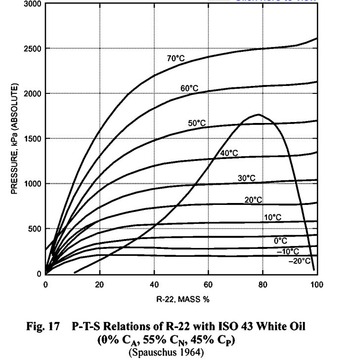
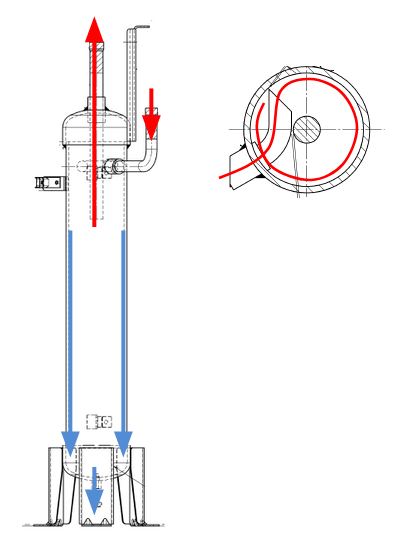

冷凍機油の使用目的
Definition 1 冷凍機油
- 冷凍空調機用の圧縮機に使用される潤滑油を冷凍機油と呼ぶ
- 冷媒と直接接触する(冷媒と一緒に冷凍サイクルを流れる可能性がある)
- JIS Ｋ2211(摩擦試験方法」または「摩擦試験に関する規格」)等で規格化もされている
冷凍機油の使用目的
- 圧縮機の回転部分やシリンダとピストンの隙間などの摺動部分の摩擦/摩耗の防止
- 圧縮機内の摩擦熱や作動熱を吸収・除去という冷却作用
- 金属部品の腐食を防ぐ防錆目的
- 圧縮機内部で冷媒ガスが漏れるのを防ぐために，ピストンや軸の隙間を密封するシーリング目的
冷凍機油に求められる性質
冷凍機油は冷凍サイクル内を冷媒と一緒に流れるので
- 超低温からかなりの高温まで耐えること
- 冷媒との相溶性に優れていること(溶け過ぎも溶けなさすぎもダメ)
が必要です．相溶性が悪いと，分離した油が滞留し冷媒の流れを妨げるだけでなく，冷却装置の構成効果を低下させたり，キャピラリで閉塞を起こすこともあります． 使用目的と合わせて冷凍機油に求められる性質をまとめると以下のようになります
| 性質 | 説明 |
|---|---|
| 適切な粘度 | 潤滑性能の観点から，粘度は適切で，運転温度範囲内で安定していることが必要 |
| 油膜形成性 | 金属表面の接触を油膜が遮断することで，部品の摩耗や損傷を防ぐことができる |
| 低い凝固点 | 凝固点が低いこと．冷凍機は低温環境で動くため，油が固まってしまうと潤滑性能が失われる |
| 化学的安定性 | 高温や圧力の条件下でも分解や劣化が起こりにくいこと |
| 水分を含まないこと | 金属部品を腐食させない．水分を含んでしまうと，低温で氷ができ，配管やバルブの閉塞の原因になる |
| 酸分を含まないこと | 金属部品を酸化を通して腐食させない． |
| 硫黄分を含まないこと | 硫黄が酸化・分解すると腐食性の硫黄酸化物が発生し，金属の腐食を促進してしまう |
| 酸化しにくいこと | 酸化が進むと油の分子構造が変化し，粘度が変動したり，潤滑効果が低下．酸化分解物が集まるとスラッジができてしまう |
| 絶縁性 | 冷凍機のコンプレッサーには電動モーターが使われているため，冷凍機油が絶縁性を持っていないとショートサーキットが発生してしまう |
| 絶縁材・シール材との適合性 | 絶縁材・シール材とと化学的に反応せず，膨潤や硬化，脆化を起こさないこと |
| ワックス非析出 | ワックスが生成されると配管や油路，フィルター詰まりを起こすリスクが上がる |
二層分離とは，冷凍機油と冷媒が混ざらずに，上層・下層の二層に分かれる状態のことです．冷凍機油と冷媒の「溶解度」が低いと，二層分離が起こる可能性が高くなります，二層分離による悪影響として
| 項目 | 内容 |
|---|---|
| ① 潤滑不良 | 油が冷媒と一緒に圧縮機を回らなくなり，潤滑部に油が届かない．→ 摩耗・焼き付きの原因 |
| ② 冷媒循環不良 | 油が冷媒ラインに滞留・詰まり，熱交換器での冷媒の流れが阻害される |
| ③ 起動不良・故障 | 起動時に油が偏在すると，液圧縮や過負荷の原因になる |
| ④ 圧縮機温度上昇 | 油膜が切れ，摩擦が増えることで発熱 → 過熱・絶縁劣化・寿命短縮 |
| ⑤ 圧力損失 | 油が冷媒と共に移動しないため，配管内の圧力損失が大きくなる |
そのため，
- 冷媒と相溶性のある油を選定
- 油戻し設計
- 油分離器の設置
- 定期点検・交換
が重要になってきます．
冷凍機器の構成と潤滑油に要求される性能
| 主な構成部品 | 油に要求される性能 | 主な評価試験 |
|---|---|---|
| 蒸発器（エバポレータ） | ① 低温流動性 ② 冷媒相溶性 ③ ワックス等の非析出性 |
① 流動点 ② 冷媒溶解度，粘度，シールドチューブ冷媒共存流動点 ③ フロック点 |
| 膨張弁（キャピラリ） | ① 耐スラッジ性 ② 剪断安定性 ③ 低温流動性 ④ ワックス非析出 |
① 熱安定性 ②（剪断安定性） ③，④ 同上 |
| 凝縮器（コンデンサー） | ① 冷媒との高温相溶性 | 冷媒との相溶性 |
| 圧縮機（コンプレッサ） | ① 潤滑性，極圧性 ② 熱安定性，化学的安定性 ③ 冷媒相溶性 ④ モーター等材料適合性 ⑤ 密閉型圧縮機では電気絶縁性 |
① ファレックス試験，高速四球，高圧摩擦試験 ② シールドチューブ加水分解安定性 ③ 冷媒相溶性 ④ シールドチューブ，オートクレーブ ⑤ 絶縁破壊電圧・体積抵抗率 |
冷凍機油の種類
冷凍機油は
- 鉱物油
- 合成油
に大別されます．鉱油は石油由来の非極性炭化水素系を基油としており，ナフテン系鉱油やパラフィン系鉱油があります．非極性の炭化水素分子は，同じ非極性分子同士とはよく混ざり合うので，ＨＦＣ冷媒はＣＦＣ冷媒やＨＣＦＣ冷媒とは相溶性が良いです．一方，ＨＦＣ冷媒対応冷凍機油の場合，ＨＦＣ冷媒はＣＦＣ冷媒やＨＣＦＣ冷媒とは異なり構造的に電気的に極性を有するため，従来の鉱油とは相溶しません．そのため，冷凍機油の分子にエステル結合（-ＣＯＯ-） 等の極性を有する結合を導入し合成したＨＦＣ冷媒と相溶する冷凍機油が開発されています．
具体的には，エステル結合を有するエステル油，カーボネート油，エーテル結合（-Ｏ-）を有するポリアルキレングリコール油（略称ＰＡＧ），ポリビニールエーテル油（略称ＰＶＥ）等が該当し，ＨＦＣ134ａ 対応のカーエアコンにはＰＡＧ，冷蔵庫にはポリオールエステル油（ヒンダードアルコール利用のエステル油，略称ＰＯＥ） が既に導入されており，Ｒ407ＣやＲ410Ａ対応空調機にはＰＯＥ，ＰＶＥが適応される傾向が有ります．
| 用途 | 主な圧縮機の形式 | 主たる冷媒 | 主たる潤滑油 |
|---|---|---|---|
| 家庭用冷蔵庫 | レシプロ等 | R134a | ポリオールエステル（POE） |
| カーエアコン | 斜板式，ロータリー，スクロール等 | R134a | ポリアルキレングリコール（PAG） |
| エアコン | ロータリー，スクロール等 | R410A，R407C | ポリオールエステル（POE），ポリビニルエーテル（PVE） |
| ショーケース | ロータリー，スクロール，ターボ等 | R404A，R507 | ポリオールエステル（POE） |
| 産業用冷凍機 | レシプロ，スクリュー，スクロール，ターボ等 | アンモニア | ポリアルキレングリコール（PAG） |
| 産業用冷凍機 | レシプロ，スクリュー，スクロール，ターボ等 | R404A，R507 | ポリオールエステル（POE） |
- アンモニアを冷媒とする往復圧縮機では，吐出しガス温度が高く，冷凍機油が劣化しやすい
- 圧縮機から吐き出された冷凍機油が非相溶性の場合には，圧縮機に戻さず，冷凍装置の外部に放出する場合もある
- アンモニアと相溶性のある合成油を用いた場合は，フルオロカーボン冷媒と同様に油分離期から直接油を圧縮機に戻したり，装置内を循環させて圧縮機に戻したりする
冷凍機油と冷媒の相互溶解性
相溶性は温度と圧力で定まり，二層分離するものから完全相溶するものに大別されます．
温度条件: -40~90℃, 冷凍機油分率: 20~30 mass%
| 冷凍機油 | R32 | R125 | R134a | R143a | R152a |
|---|---|---|---|---|---|
| ナフテン系 | 分離 | 分離 | 分離 | 分離 | 分離 |
| PAG油 | -40℃以下で分離 | 溶解 | 溶解 | 分離 | 溶解 |
| エステル油 | 溶解 | 溶解 | 溶解 | 分離 | 溶解 |
| エステル油 | 分離 | 溶解 | 溶解 | -10℃以下で分離 | 分離 |
- 分離: 冷凍機油リッチな液相と冷媒液リッチな液相との２つの液相に分離すること
溶解，部分溶解，分離は温度帯によって変化しますがR410とPOE油との溶解性をみると以下のように変化します
| 温度帯 | 40 mass%のR410Aの溶解性 |
|---|---|
| -59~-32℃ | 分離 |
| -32~-23℃ | 部分溶解 |
| -23~50℃ | 溶解 |
| 温度帯 | 60 mass%のR410A |
|---|---|
| -59~-15℃ | 分離 |
| -15~-1℃ | 部分溶解 |
| -1~30℃ | 分離 |
| 30~-37℃ | 部分溶解 |
| 37~-41℃ | 分離 |
| 温度帯 | 95 mass%のR410A |
|---|---|
| -59~-30℃ | 分離 |
| -30~-10℃ | 部分溶解 |
| -10~48℃ | 溶解 |
下の図では冷凍機油に対するR22の溶解度を示しています．横軸は溶解度ですが，質量分率で表されています．つまり 質量分率 = 冷媒質量 / 冷凍機油質量 です．平衡線図より
- 圧力が同じであれば，温度が高いとR22の溶解度が小さい
- 温度が同じであれば，圧力が低いときにR22の溶解度が小さくなる
始動時のオイルフォーミングは，急に圧力が下がると平衡溶解度が小さくなるので，余分な冷媒が気化して追い出される現象です．

冷媒が冷凍機油に多量に溶け込むときの問題
① 潤滑性能の低下（粘度低下）
- 冷媒が油に多く溶け込むと，油の粘度が著しく低下します
- 粘度が低いと，潤滑油膜が形成されにくくなり，摩擦・摩耗が増加
② 発泡現象（フォーミング）
- 圧縮機起動時や急激な圧力変化時に，冷媒が油から急に気化し，泡が発生
- この泡によって油の供給が不安定になり，潤滑不足やキャビテーションを引き起こす可能性がある
油分離器: Oil Separator
Definition 2 油分離器
- 油分離器は，冷凍装置の圧縮機と凝縮器との間に設置し，圧縮機吐出しガスに含まれている冷凍機油を分離する機器
- フルオロカーボン冷凍装置や総妖精の冷凍機油を用いたアンモニア冷凍装置では，分離した冷凍機油を圧縮機のクランクケースへ戻す
- 非相溶性の冷凍機油を用いたアンモニア冷凍装置では，分離した冷凍機油を油溜め器に送り出す場合もある
- 小型のフルオロカーボン冷凍装置では配管距離が短いので油分離機を設けないことが多い
なぜ凝縮器にそのまま冷凍機油を送り出してはいけないのか？
- 吐出しガス中に含まれる冷凍機油をそのまま凝縮器に送り込むと，圧縮機の湯量は減少し，潤滑不良の原因となる
- 凝縮器の伝熱作用を阻害する可能性もある
- 凝縮器・膨張弁を経由して蒸発器に流入すると，冷凍機油が蒸発器に蓄積され，蒸発器での伝熱作用を阻害するリスクがある
- 相溶性の冷凍機油を冷凍装置では，以下の観点から冷媒に混入した冷凍機油を蒸発器から圧縮機へ戻すことが難しい
- 低圧配管ではガス密度が小さく，配管断面積が大きいため流速が遅い → 油を押し流す力が弱い
- 一般に油は温度が低下するにつれ粘度は増大し，増大する分だけ油を押し流す力が必要になる
圧縮機や蒸発器の台数が多い場合，油を均等にクランケースに戻すのが難しくなります．そのため，油分離機を圧縮機後，凝縮器前に設置することが求められます．
油分離器の原理
- 圧縮機から吐出された油交じりの冷媒ガスを油分離器の側面にあてることで，油は壁面に付着し下部へ滴下する．（遠心分離）
- ガスは上部から排出され，不要な油を系外へ排出しないようにしている．
- 滴下した油は下部の油戻し穴を通って，圧縮機の吸入配管へ戻る．

油戻し運転
Definition 3 油戻し運転
油戻し運転とは，冷媒回路内に拡散・滞留してしまった冷凍機油を圧縮機へ戻すための特別な運転のこと
油戻し運転の方式
方式①
- 縦配管でも油が戻っていくまでの冷媒流速まで上げて冷媒ガスで冷凍機油を戻す
- 流速を上げるので，インバータ周波数を高回転にする必要があり，その為に，室内機側の冷媒通過音が大きくなる。また能力が過剰になるため冷え過ぎる
方式②
- 液冷媒と一緒に油を戻す
- 湿り運転させる必要があるので，液冷媒が圧縮機内に戻り，圧縮機故障につながる可能性がある
📘 理解度チェック
Exercise 1 冷凍機油の使用目的
次の記述の内，正しいものを選べ
- 冷凍・空調用の圧縮機に使用されている潤滑油を冷凍機油と呼ぶ．HFC系冷媒用冷凍機油の合成油は水分を吸収しやすいものが多いので保守管理には注意を要する
- 冷凍機油の役割は，圧縮機の軸受，ロータやピストンなどの潤滑面に油膜をつくり，金属どうしの直接接触を避け，円滑なしゅう動と摩耗防止とともに，摩擦によって生じる熱を除去することなどである
Exercise 2 冷凍機油の種類
次の記述の内，正しいものを選べ
- 冷凍機油は，鉱油と合成油の2種類がある
- 鉱油は，炭化水素を基油にしている．ナフテン系鉱油，パラフィン系鉱油がある
- 合成油の主なものは，ポリアルキレングリコール（PAG）油，ポリビニルエーテル（PVE）油，ポリオールエステル（POE）油などがある
- 鉱油や合成油と混合して冷凍機油として用いているアルキルベンゼンがある
- HFC系冷媒は，アルキルベンゼン系鉱油などの炭化水素系冷凍機油には溶解しないが，合成油であるポリオールエステル（POE）油などには相溶性がある
Exercise 3 冷媒と冷凍機油の組合せ
次の記述の内，正しいものを選べ
- フルオロカーボン中に水分が入ると，冷媒が加水分解されて腐食性物質を発生し，金属が腐食を起こす原因になる
- フルオロカーボン冷媒が油に溶け込む割合は，冷媒の圧力が高いほど，または温度が低いほど大きい
- フルオロカーボン冷媒は油とよく溶け合うので，吐出し管に脂分力を設けても，油を分離することはできない
- R22は油をよく溶解するので，蒸発器内に油が大量に滞留しても伝熱上支障がない
- フルオロカーボン容圧縮機のクランクケース内の油温が低い場合，始動時にオイルフォーミングを起こし，油上がりが多くなる